首先，您应该拥有一个 bluevpn pro 账号，然后再简单配置一下客户端，即可畅享网络，正版 bluevpn pro 账号从 这里 获得。
iOS设备必须升级到iOS9，Surge应用了最新iOS9的网络特性
直接设置是木有shadowsocks模块的，官方或许是为了防止河蟹吧，刻意去掉了。
1. 打开Surge，点“Edit”，点“Download Configuration from URL”，在弹出的地址栏中输入 http://surge.pm/main.conf 或 https://async.be/Rule/Basic/Surge 点OK，导入配置文件。如果弹出404错误，请仔细检查地址输入是否有误。
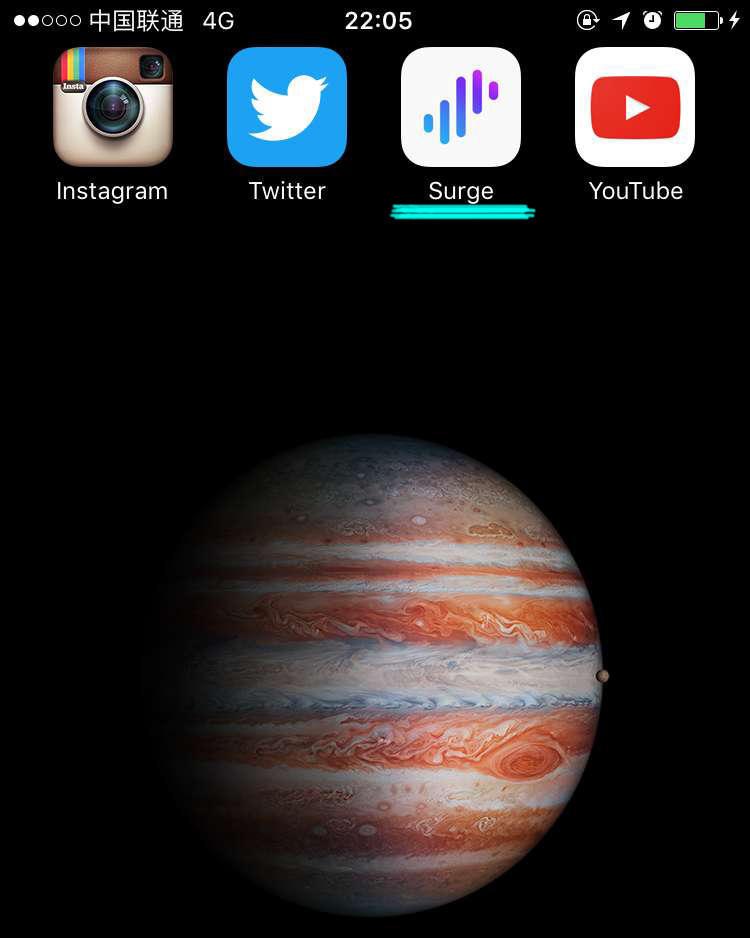
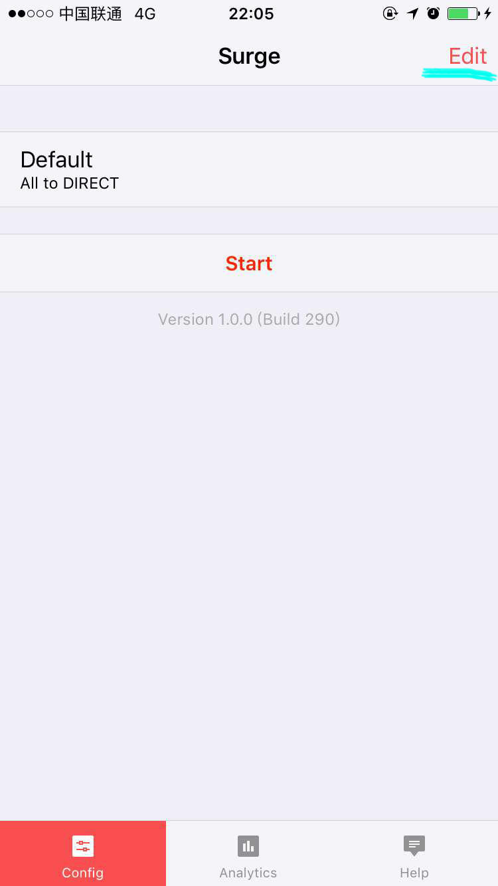 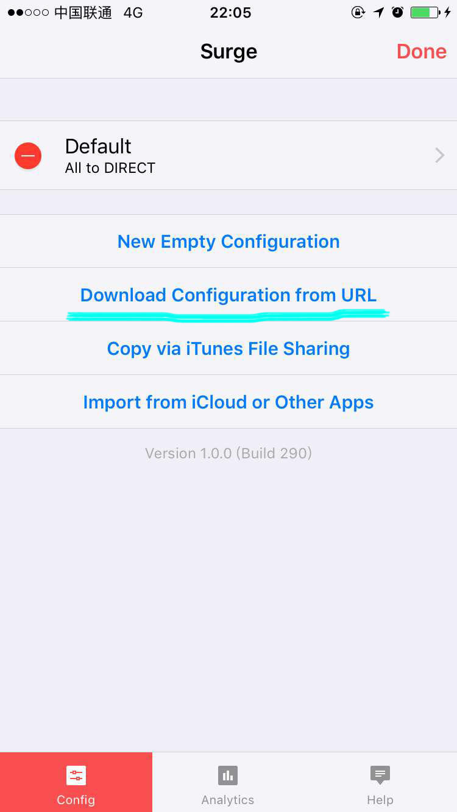 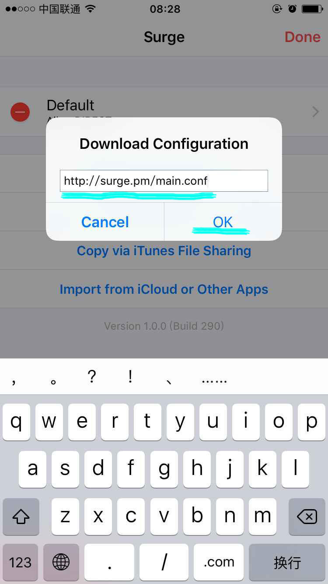
2. 点击刚刚导入的配置文件main，进入Proxy。
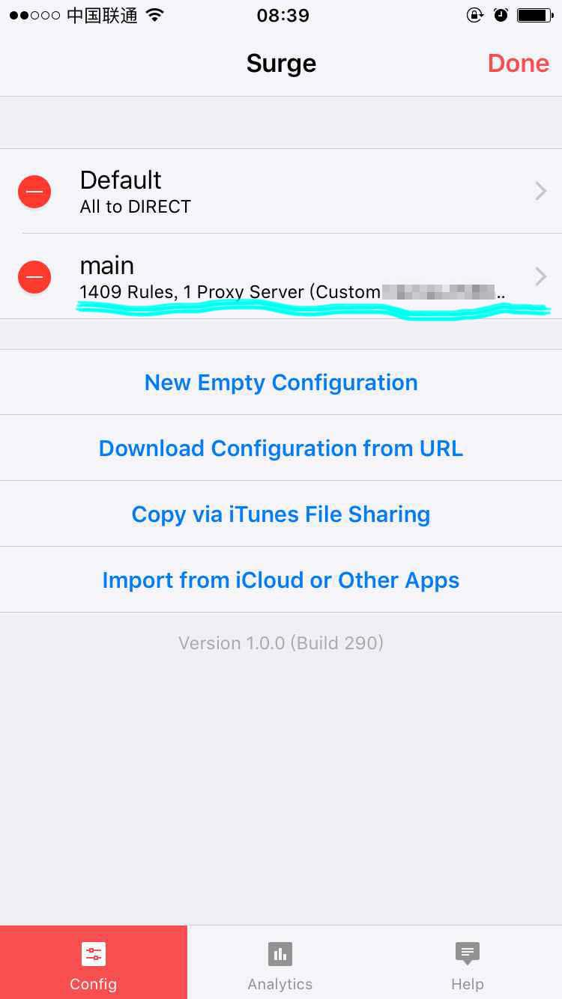 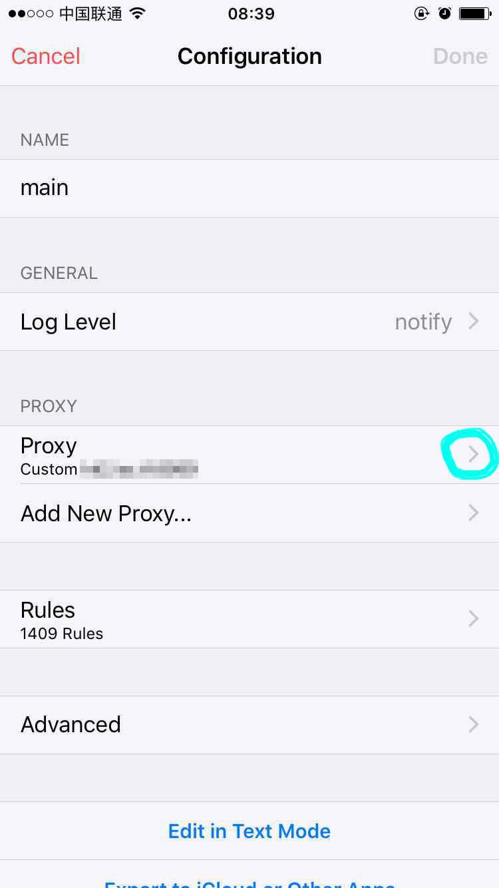
3. 好了，这里要填的就是Shadowsocks帐号信息，Server填服务器地址，Port填端口号，Username填加密方式，Password填密码。这些信息在前面的准备工作已经完成了，不要说你不知道。
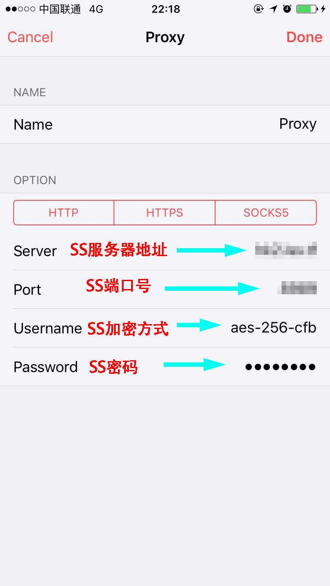
4. 填好了以后，点两次Done回到主界面，选择刚刚配置好的main那条，点Start。
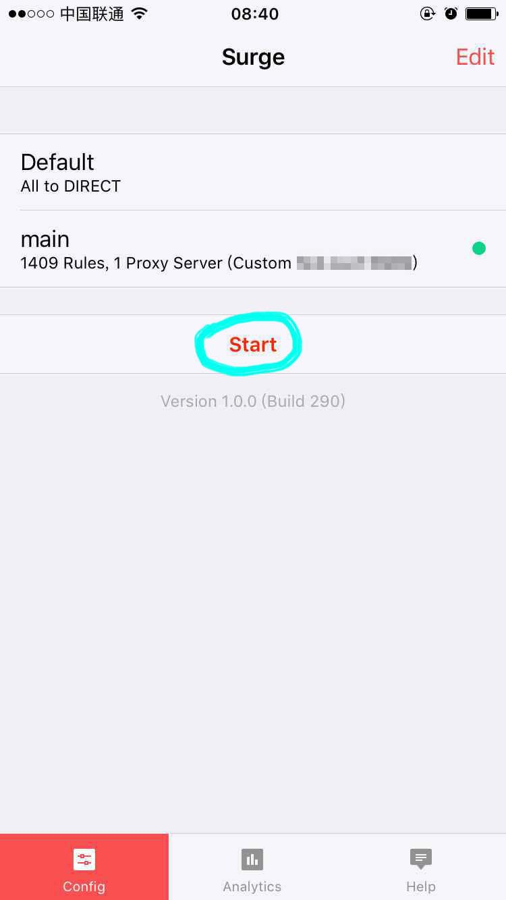
5. 第一次运行，会出现下面的提示，按图操作就行了。如果提示需要密码，输入锁屏的4位数字密码，只要没出现问题，以后不会出现这些步骤的。
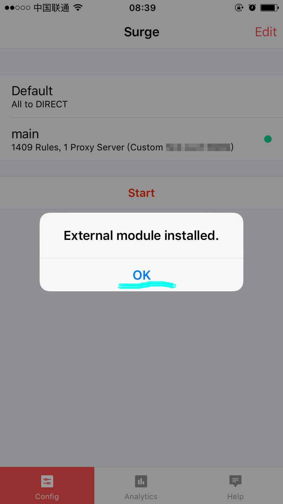 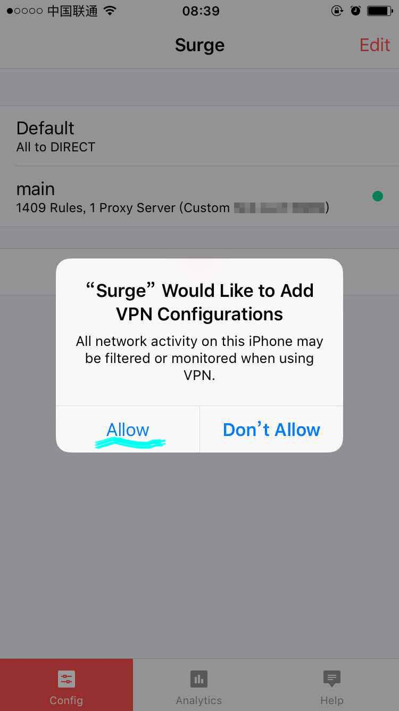
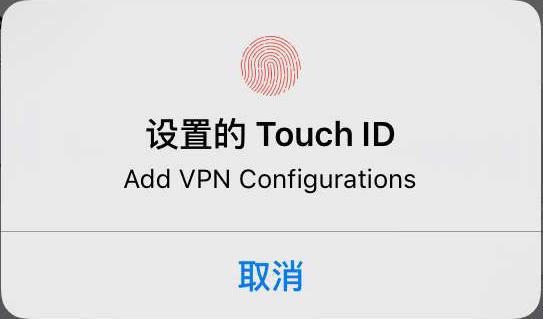
6. 还是回到主界面，再点一次Start，见证奇迹的时刻到了，秒连，上面出现VPN图标。
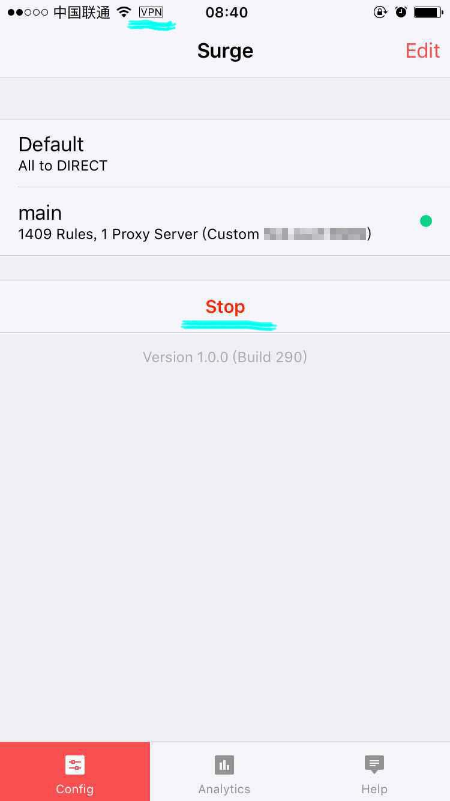
7. 还等什么，Ins、Twitter、油管神马的刷起来
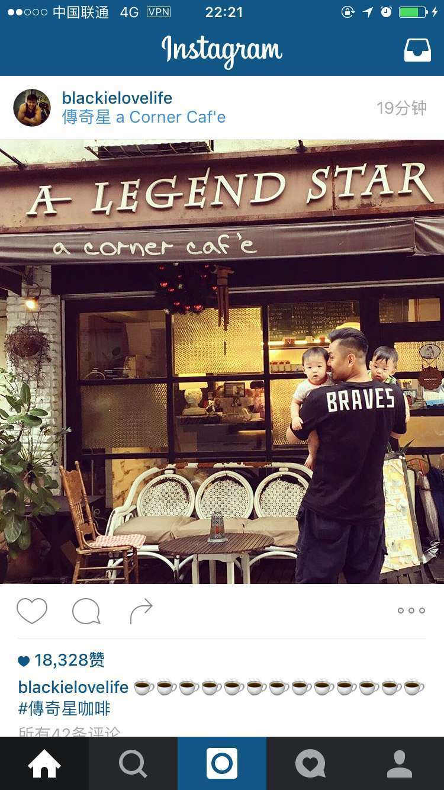 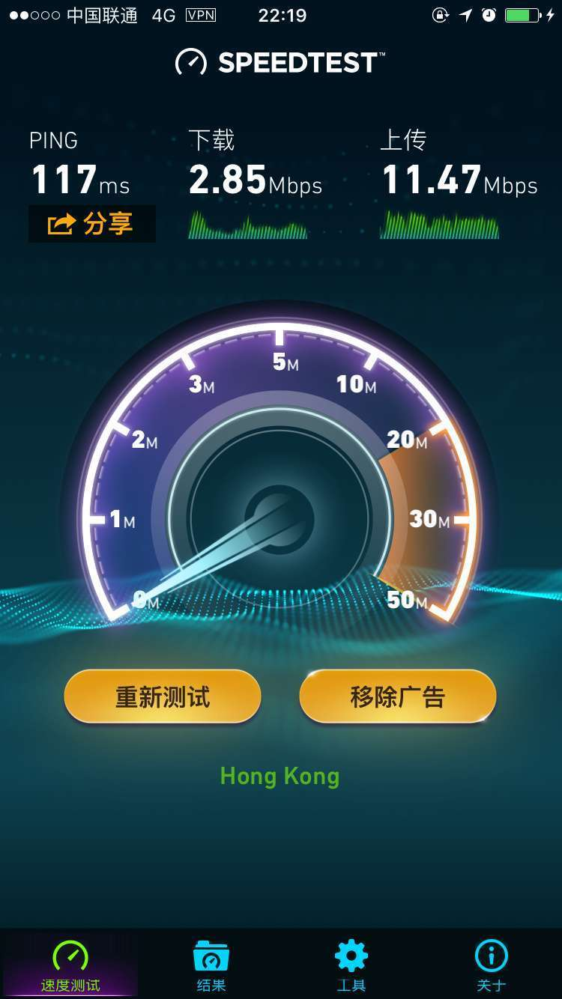
Q：速度会慢吗？
A：不会，和你平时用shadowsocks完全一样。
Q：怎么样换服务器呢？
A：改Proxy里面的Server。
Q：使用微信什么的，要断开吗？
A：完全不需要，微信/QQ神马的统统都不通过代理。
Q：锁屏会断开吗？
A：不会。
Q：怎么样快速开启和停止？
A：Surge提供了通知中心Widget，在Widget里面调出来，很方便的进行开启和停止。
Q：上面显示VPN图标了，怎么还是打不开？
A：显示VPN图标，只能说明Surge接管了你的网络，但是不代表你的SS账号和服务器是正常的，建议检查SS的设置。